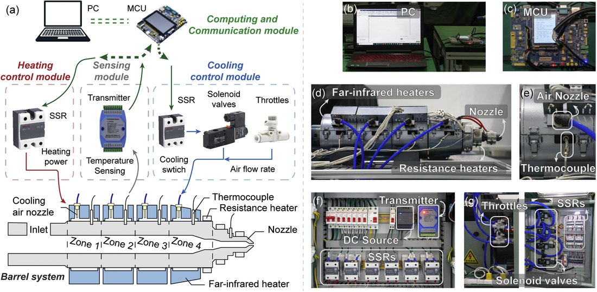
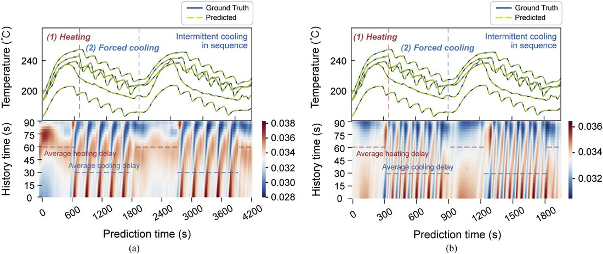

工业加热过程时序再注意力 LSTM 预测（TRA-LSTM）Temporal Re-Attention LSTM for Industrial Heating (TRA-LSTM)
加热过程占材料制造 60%+ 能耗，但强耦合、大时延导致温度难预测；TRA-LSTM 在编解码 LSTM 上用时序注意力提取关键历史特征，再加“再注意力”损失校正注意力对齐时延，在 4 个真实数据集 6 项预测上稳定优于 5 种先进方法。Heating accounts for 60%+ of manufacturing energy, yet strong coupling and large delays make temperature hard to predict. TRA-LSTM adds temporal attention to an encoder–decoder LSTM and a “re-attention” loss to align attention with the true delay, beating 5 advanced methods across 6 tasks on 4 real datasets.
背景Background
加热能耗占比高，温度预测是能源管理第一步；但多变量耦合、大时延、传热特性频繁变化。Heating dominates energy use and prediction is the first step to energy management; but variables are coupled, delays large, and heat-transfer properties keep changing.
方法Method
- 编码器-解码器框架 + 时序注意力模块提取关键历史特征。Encoder–decoder with a temporal-attention module extracting key historical features.
- 再注意力损失层校正注意力，使其对齐真实时延。A re-attention loss layer corrects attention to align with the real delay.
- 在 4 个真实数据集（含注塑料筒加热、电池热失控）上验证。Validated on 4 real datasets, including barrel heating and battery thermal runaway.
结果Results
- 6 项预测均稳定优于 5 种先进时序方法；再注意力权重与实测时延对齐。Beats 5 advanced methods on all 6 tasks; re-attention weights align with measured delays.
- 消融证明再注意力模块贡献显著，提升大时延场景的精度与可解释性。Ablation shows the re-attention module contributes significantly, improving accuracy and interpretability under large delays.
图片Figures


本人熟悉其方法思路（领域学习 / 技术调研）；论文一作为课题组其他成员。I am familiar with the method (domain study / technical review); first authorship belongs to other lab members.